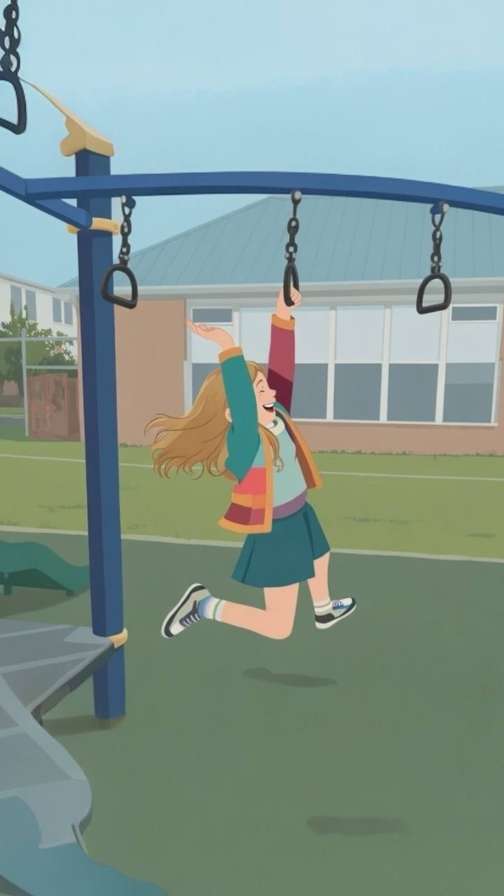

And why we built Sensory Galaxy.
Mackenzie was diagnosed with celiac disease when she turned one. We learned the basics fast. Read labels. Cut out gluten. Cook separate meals.
But then something else started happening that nobody warned us about. She got weird around food. Anxious. Like, visibly tense whenever we put something new on her plate.

By the time she was four, her safe foods list was down to five things. Chicken nuggets, rice, applesauce, toast, cheddar. That was it. Mealtimes stopped being fun. They turned into battles. She'd panic at family dinners. We'd feel like failures. I'd look at other parents with kids eating salad and feel this crushing guilt. Like something was wrong with us. Like I was doing this to her somehow.
One day I was reading a forum (like, 3 AM, can't sleep because I'm worried type of reading). Someone mentioned Sequential Oral Sensory. SOS. I'd never heard of it.
I read about it for an hour straight. It clicked. Like, her nervous system isn't wired the same way. She's not being difficult. She's genuinely scared of new food textures. Her body is saying "nope" before her brain can even process it. It's not her fault. It's not our fault.
The method is simple. Five phases. Look, touch, smell, lick, taste. No forcing. No pressure. Just exposure at her pace. And she gets to control it.
The first time we tried it with her, she went into her shell a bit. But something was different. We weren't pushing. And without the pressure, she wasn't shutting down. By week three she was willing to touch new foods. By week eight? She asked for broccoli. I literally cried. Not the happy cry, the shocked cry. Like, who is this kid?
After Mackenzie's shift, I couldn't stop thinking about all the other parents we know. How many are in that same place we were? Feeling broken. Blaming themselves. Not knowing that there's a method that actually works?
The thing is, the SOS Approach works. But it's not sexy. There's no app for it. There's no way to track progress. There's no badge system to make your kid feel like a hero when they touch a new texture. That's what we wanted to build.
Sensory Galaxy takes the actual SOS method and makes it something kids want to do. They pick an explorer character. They log foods. They unlock planets. Every time they look at a new food, they get closer to the next phase. It's a real game based on real science, with their parent watching the data so they can actually see progress.
And here's the thing that matters most: it removes shame. For both the kid and the parent. You're not failing. Your kid isn't broken. They're on an adventure.
If your kid eats five foods and you're exhausted. If mealtimes are a battle. If you've felt like you're doing something wrong. You're not.
Your kid's nervous system just works differently. That's not a flaw. It's just how they're wired. And the good news is there's a way to work with it instead of against it.
Mackenzie still has her preferences. She's not magically eating everything now. But she's curious. She tries things. She feels brave instead of scared. And we stopped feeling like failures.
That's what Sensory Galaxy is for. For families like ours. For the moment when you stop pushing and start understanding. When everything changes.
We're launching soon. If this sounds like your family, join the waitlist.
Join the Waitlist